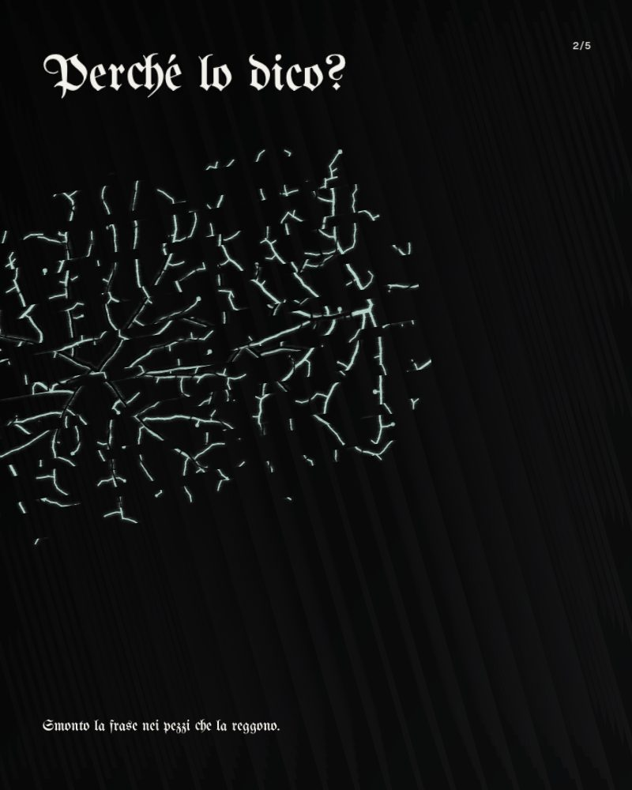
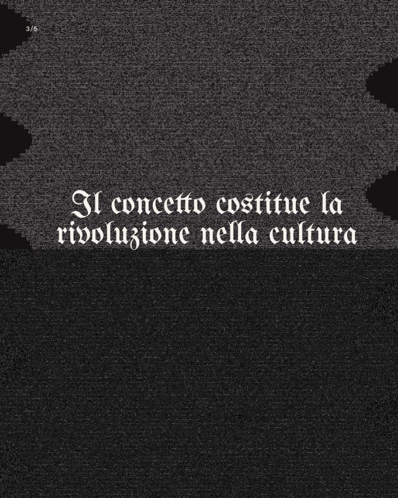

Mossa

1/5 · Mossa:AFPU

2/5 · Perché lo dico?
Smonto la frase nei pezzi che la reggono.

3/5 · Il concetto costitue la rivoluzione nella cultura

4/5 · Il materiale costitue il substrato dal vulcano

5/5 · Mossa
Mossa:AFPU
cosa c'entra il materiale con il concetto?